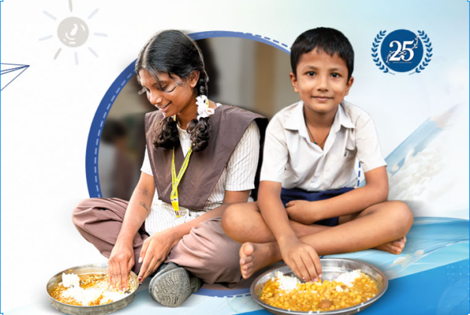

I am a Food Donor
Restaurants, caterers, hotels, canteens, and event organizers. List your healthy, edible surplus food in under 2 minutes for quick NGO collection.
Register as Donor →We bridge the gap. Our seamless platform connects edible surplus food from restaurants, hotels, and canteen providers directly with nearby NGOs ready for immediate distribution.

Choose how you would like to contribute to the FoodRescue community today.
Restaurants, caterers, hotels, canteens, and event organizers. List your healthy, edible surplus food in under 2 minutes for quick NGO collection.
Register as Donor →Food banks, shelters, and local community outreach networks. Get matched instantly with nearby food donors and handle quick logistics seamlessly.
Register as NGO →A simple process that helps surplus food reach people who need it.
Create a quick verified account to keep the network secure and reliable.
Detail quantity, food type, shelf-life, and pickup window.
Nearby NGOs receive an instant alert when suitable surplus food is available.
The NGO collects the food and delivers meals safely to people in need.
Turning surplus food into meaningful community impact.
Providing vital nutrition, diverting edible food from landfill rot.
Empowered networks feeding families, shelters, and veterans daily.
Mindful food businesses taking concrete zero-waste social actions.